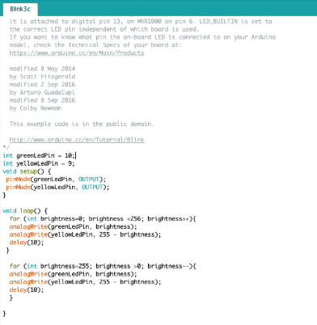
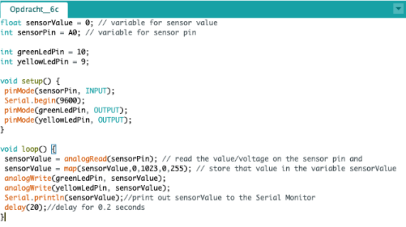
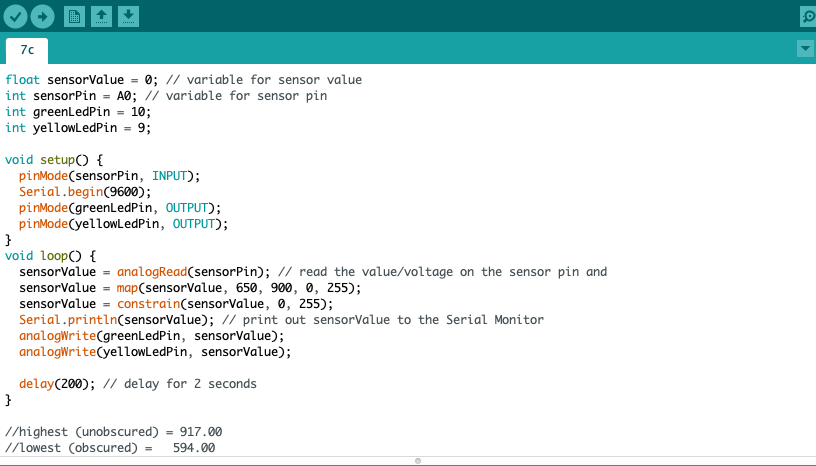
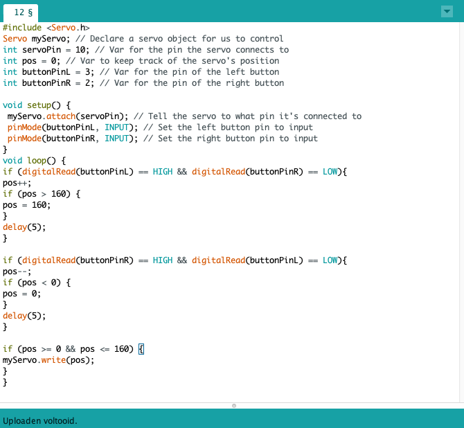

Na het downloaden van het Arduino software en het uitpakken van de hardware kit kon in aan de slag. Wat me direct al opviel is dat alles heel klein is en dat je heel secuur te werk moet gaan. In de eerste opdrachten werden er kennis gemaakt de interface van de software, Arduino bord en met het breadboard. De werking van de software doet me denken aan JavaScript.
Assignment first week
EXERCISE 3C: Blink multiple LEDS
Opdracht 3 stond in het teken van twee lampjes laten branden van een lampje, en bij 3c moest je twee lampjes laten knipperen op verschillende momenten. Allereerst is het belangrijk dat je de lampjes, de resistor en de jumper wires goed plaats. Vervolgens kun je in functies en loops aanmaken in op je computer die er voor gaat zorgen dat je lampjes gaan branden. Het maken van een loop zorgt er net zoals bij JavaScript dat het constant blijft gaan. De regel
EXERCISE 4C : Fade LED – Analog Output
Bij opdracht vier was het nu de bedoeling om de felheid van de lampjes te regelen. Bij 4c was het de bedoeling dat het wanneer het ene lampje langzaam uitgaat, de ander langzaam aangaat. Met deze opdracht kon ik verder gaan met de onderdelen van opdracht drie alleen heb ik de jumpwires verplaatst van 13 naar 10 ( het groene lampje) en 12 naar 9 ( het gele lampje) In de loop die geeft ik aan dat de brightness van het lampje van 0 (helemaal uit) naar 255 (helemaal aan) moet gaan en andersom en dit herhaal ik om het ene lampje langzaam aan te zetten en op datzelfde moment het andere lampje uit te zetten. EXERCISE 6C : Controlling a LED with a potmeter
Bij opdracht 6 was het nu de bedoeling om de lampjes te ‘besturen’ middels de potmeter ik heb bij deze opdracht gebruikt gemaakt van dezelfde onderdelen als de voorgaande en heb ik hierbij de potmeter en om deze aan te sluiten 3 jumper wires toegevoegd. De opdracht bij 6c was om de het ene lampje te laten gaan branden als de ander uitging door middel van aan de potmeter te draaien. EXERCISE 7C : Control the LED with light
Bij opdracht 7 was het de bedoeling om de lampjes nu te ‘besturen’ middels invallend licht door de LDR resistor. Deze reageert op binnenkomend licht. Voor deze opdracht werd de potmeter ingeruild voor de LDR resistor EXERCISE 8 : Voltage Divider
Assignment second week
EXERCISE 9 : Arduino and Processing
Met opdracht 9 moest ik met twee programma’s werken, met Arduino en Processing. Door deze twee programma’s samen te gebruiken, kunnen er echte elektronische invoerapparaten voor een digitale omgeving en omgekeerd gemaakt worden. Er werd ons gevraagd of we de sensor konden inzetten om op het schermpje via processing iets konden weergeven. Ik heb in processing met de regelEXERCISE 10 F : Buttons
Met opdracht 10 ben ik aan de slag gegaan met een kop, want een lichtmeter en een potmeter is hartstikke leuk maar een simpele knop werkt natuurlijk heel fijn om een lampje aan te zetten. Vervolgens moest ik er een tweede knop toevoegen en er voor zorgen dat het lampje ging branden wanneer een knopje was ingedrukt en het andere knopje niet .
EXERCISE 11B : Servomotor
Bij opdracht 11 moest ik aan de slag met de servomotor. Een servomotor is een motor die het maken van precieze draaibeweging mogelijk maakt. Ze worden voor veel doeleinden ingezet waaronder voertuigen maar ook voor beveiligingscamera’s om zo de camera te laten draaien en te kunnen focussen om een bepaald beeld. Om met de servomotor aan de slag te gaan in Arduino was het nodig om een speciale code bibliotheek te importeren. Dit gaat heel gemakkelijk om de codeEXERCISE 12B : Controlling the servo with inputs
Bij opdracht 12 ging ik verder met de servomotor maar moest ik deze gaan besturen andere inputs namelijk de potmeter en bij opdracht 12b met twee knoppen. Als het ene knopje wordt ingedrukt draait de servomotor naar links en wanneer het andere knopje wordt ingedrukt draait de servomotor naar rechts. EXERCISE 13B : Sound
Bij opdracht 13 was het de bedoeling om nu aan de slag te gaan met een Piezo speaker om zo geluid te produceren. De speaker bevat twee verschillende metalen die trillen waardoor er geluid uit de speaker komt. Met de functie